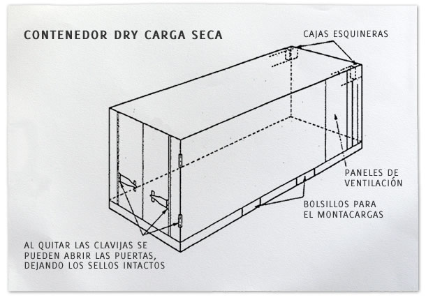

Partes y componentes de un contenedor
Conforme con el IICL, International Institute Container Lessors, entidad que avala a nivel internacional la formación y capacitación de inspectores de contenedores certificados, las partes y componentes estándar del contendor son como se definen a continuación y se muestran en los siguientes diagramas:
- Postes o Pilares: Componentes del marco vertical ubicados en las esquinas de los contenedores de carga y que se integran con los esquineros y las estructuras del piso.
- Cajas Esquineras: Molduras ubicadas en las esquinas del contenedor de carga que proporciona un medio para levantar, manipular, apilar y trincar el contenedor.
- Travesaño y solera: En la puerta de entrada, con un marco horizontal por encima y solera de umbral similar a nivel del piso.
Contenedor Dry Carga Seca

- Marco frontal: La estructura en el extremo frontal del contenedor (opuesto al extremo donde se encuentra la puerta) compuesta de los travesaños superiores e inferiores y que se encuentra sujeta a los travesaños verticales esquineros y los esquineros.
- Travesaño Superior: Estructuras longitudinales ubicadas en el lado superior y en los dos costados del contenedor de carga.
- Travesaño inferior: Vigas estructurales longitudinales ubicadas en el extremo inferior en los dos lados del contenedor de carga.
- Travesaños de piso: Una serie de vigas transversales aproximadamente con 12 pulgadas de separación entre cada uno sujeta al travesaño lateral inferior que es parte integral del marco de soporte del piso.
- Piso: El piso puede ser de madera laminada dura o suave, de tablones, o enchapado.
- Techo: Los arcos del techo son la estructura del techo que está más abajo y se colocan normalmente con 18 o 24 pulgadas de separación. Los modernos contenedores de acero para carga general (salvo los contenedores descubiertos u open top) no cuentan con arcos de techo pero tendrán techo de láminas de acero lisas o corrugadas soldadas a los travesaños del marco. Los contenedores de aluminio cuentan con una cobertura de aluminio, pegada con adhesivo a los arcos del techo y remachada a los travesaños superiores y frontales. Contenedores GRP (del inglés, glass reinforced plastic, plástico reforzado con fibra de vidrio) tienen paneles enchapados reforzados con fibra de vidrio unidos a los zócalos laterales y travesaños superiores. El techo es la parte del contenedor más vulnerable al daño.